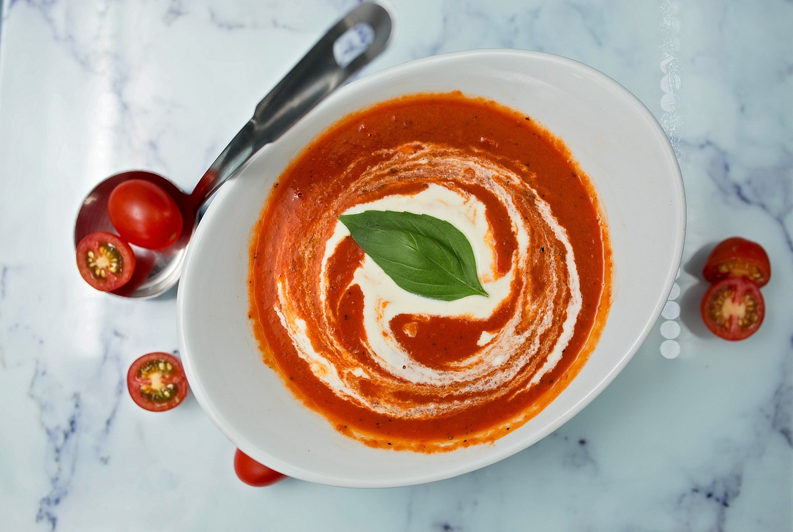

Tomato Soup
What is Tomato Soup
Tomato soup is a soup with tomatoes as the primary ingredient. It can be served hot or cold, and may be made in a variety of ways. It may be smooth in texture, and there are also recipes that include chunks of tomato, cream, chicken or vegetable stock, vermicelli, chunks of other vegetables and meatballs.

Ingredient List For Pav Tomato Soup
- Ripe tomatoes
- Onions
- Garlic cloves
- Vegetable broth
- Butter or olive oil
- Salt
- Black pepper
- Sugar (optional, to balance acidity)
- Fresh basil leaves (for garnish, optional)
- Heavy cream or milk (optional, for creamy tomato soup)
How to make Tomato Soup
Cook Tomatoes
1. Start by boiling a large pot of water. Score the base of each tomato with a small "X" using a knife. Immerse the tomatoes in the boiling water for about 30 seconds to 1 minute until you see the skin starting to peel away.
2. Remove the tomatoes from the boiling water and immediately transfer them to a bowl of ice water to cool rapidly. This will make it easier to peel off the skin.
3. Once the tomatoes are cool, peel off their skin, and then roughly chop them.
4. In a large pot, heat some butter or olive oil over medium heat.
5. Add finely chopped onions and minced garlic cloves to the pot. Sauté them until the onions become translucent and aromatic.
6. Add the chopped tomatoes to the pot and cook for a few minutes until they start to break down and release their juices.
7. Pour in vegetable broth to cover the tomatoes. Bring the mixture to a simmer and let it cook for about 20-25 minutes until the tomatoes are soft and fully cooked.

Blending Tomatoes
8. Use an immersion blender or transfer the soup to a blender to puree it until smooth. Be cautious when blending hot liquids, and do it in batches if using a traditional blender.
Simmering Soup Further
9. Return the pureed soup to the pot. Season it with salt, black pepper, and a pinch of sugar to balance the acidity of the tomatoes. Adjust the seasoning to taste.
10. If you prefer a creamy tomato soup, you can add a splash of heavy cream or milk at this point and stir it in until well combined.
11. Simmer the soup for an additional 5-10 minutes to allow the flavors to meld together.
12. Taste and adjust the seasonings if needed.
13. Ladle the hot tomato soup into bowls, garnish with fresh basil leaves if desired, and serve it hot. You can also drizzle a bit of cream on top for an extra touch of creaminess.
